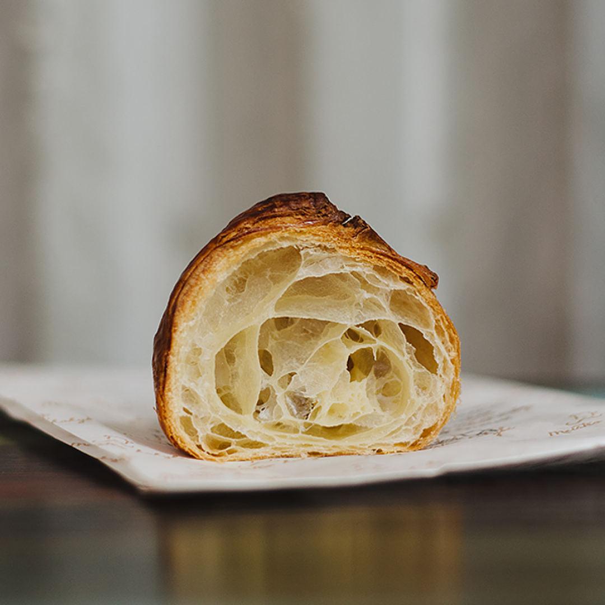
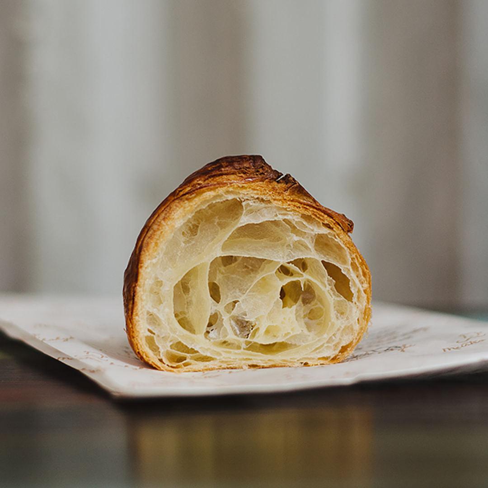

Kruasanai | Video receptas
2020.10.29 10:59
LT German (Deutsch) English (English) Spanish (español) Lithuanian (lietuvių) Polish (polski) Russian (русский) Meniu Mano išsaugoti receptai Alkoholiniai kokteiliai Brendžio kokteiliai Degtinės kokteiliai Džino kokteiliai Likerio kokteiliai Romo kokteiliai Šampano kokteiliai Tekilos kokteiliai Vermuto kokteiliai Viskio kokteiliai Pasaulio virtuvė Lietuviški patiekalai Azijietiški patiekalai Indiški Patiekalai Itališki patiekalai Kiniški patiekalai Bulvių patiekalai Paukštienos patiekalai Antienos patiekalai Kalakutienos patiekalai Vištienos patiekalai Apkepai Desertai Bandelės Keksai ir keksiukai Sausainiai Saldainiai Patiekalai pusryčiams Blynai Sumuštiniai Daržovių patiekalai Daržovės ir atsargos žiemai Greitai pagaminami patiekalai Grybų patiekalai Mėsos patiekalai Jautienos patiekalai Kepsniai ir kotletai Kiaulienos patiekalai Patiekalai iš faršo Triušienos patiekalai Jūros gėrybių patiekalai Nealkoholiniai gėrimai Kavos Kalėdiniai patiekalai Kepiniai Kiaušinių patiekalai Košės Makaronai Mišrainės Pyragai Obuolių pyragai Šokoladiniai pyragai Varškės pyragai Trupininiai pyragai Padažai ir pagardai Patiekalai pietums Sriubos Patiekalai vakarienei Patiekalai iškylai Šašlykai Kūčių patiekalai Žuvies patiekalai Lašišos patiekalai Silkės patiekalai Tuno patiekalai Patiekalai vaikams Patiekalai velykoms Patiekalai visai šeimai Picos Salotos Sveiki patiekalai Tortai Troškiniai Užkandžiai Užkandžiai prie alaus Vieno kąsnio užkandžiai Varškės patiekalai Veganiški receptai Veganiški pyragai Vegetariški patiekalai Virtinukai Receptai Desertai, desertas Kruasanai | Video receptas
Kruasanai | Video receptas
Recepto Autorius Gabrielės blogas
Ingredientai
šaltas pienas: 250 mililitrų verdantis vanduo: 125 mililitrų cukrus: 50 gramų miltai: 750 gramų (gali prireikti ir truputį daugiau) šaltas sviestas: 250 gramų sausų mielių milteliai: 1 valgomojo šaukšto smulki druska: 1 arbatinio šaukštelio aliejus paplaktas kiaušinis maistinė plėvelė ReklamaJums gali patikti
Lašiša su peletrūnų ir grietinėlės padažu Paprastas, bet labai neprastas obuolių pyragas Sūrio pyragėliai su kumpiu - gimtadieniams ar kitoms šventėms! ReklamaRecepto paruošimas
1. Pradžioje šaltą pieną sumaišykite su verdančiu vandeniu bei cukrumi. Miltus sumaišykite su druska ir mielėmis bei suberkite į pieno mišinį. Suminkykite minkštą, gana lipnų tešlos rutulį, dėkite jį į dubenį, išteptą aliejumi, apdenkite maistine plėvele bei 60 minučių pastatykite į šaldytuvą. 2. Tuomet sviestą užtarkuokite ant didelio maistinės plėvelės lapo bei rankomis suformuokite kvadratą (maždaug 20×20 centimetrų dydžio), apdenkite kitu plėvelės sluoksniu ir 30 minučių pastatykite šaltai, kad sviestas tokia forma ir sustingtų (aš saviškį įdėjau tiesiog į šaldymo kamerą). Reklama 3. Tada atšaldytą tešlą ant miltuoto stalviršio iškočiokite į stačiakampį (maždaug 50×20 centimetrų), per vidurį dėkite sustingusio sviesto lakštą bei iš abiejų pusių jį užklokite tešla. Pradėdamos nuo vidurio, kad tolygiai pasiskirstytų sviestas, tešlą iškočiokite (turėtų girdėtis lengvi pokštelėjimai) iki jos buvusio dydžio, kelis kartus perlenkite, suvyniokite į plėvelę ir 60 minučių pastatykite į šaldytuvą. Po valandos tešlą ištraukite bei iškočiojusios stačiakampį sulankstykite tokiu pačiu principu kaip anksčiau. Vėl padėkite į šaldytuvą. Šį žingsnį kas 60 minučių pakartokite dar tris kartus. 4. Paskutinį kartą sulankstytą tešlą peiliu padalinkite į tris lygias dalis (kol dirbate su viena tešlos dalimi, kitos ilsisi šaldytuve), iškočiokite maždaug 4 milimetrų storio skritulius ir padalinkite juos į trikampėlius. Kiekvieno trikampėlio plačiąją dalį per vidurį truputį įpjaukite peiliu bei susukite ragelius. Paruoštus pyragėlius išdėliokite ant padėklo, aptepkite paplaktu kiaušiniu, apdenkite maistine plėvele ir 10–12 valandų laikykite šaltai. Ištraukę iš šaldytuvo, dar maždaug 60 minučių pakildinkite kambario temperatūroje. Pašaukite į orkaitę, įkaitintą iki 220 laipsnių temperatūros, nedelsdamos temperatūrą sumažiname iki 200 laipsnių temperatūros bei kepkite maždaug 10 minučių, temperatūrą sumažinkite iki 180 laipsnių temperatūros ir dar pakepkite, kol pyragėliai tolygiai paruduoja. Skanaukite! Skonis tobulas :) 5. Patarimas: Naudojame tikrą kokybišką sviestą, o ne riebalų mišinį – tuomet pyragėliai bus puikaus skonio bei kvapo, o sviestas ne taip greitai lydysis. 6. Patarimas: Minkydamos tešlą nesiblaškykite bei darykite tai ganėtinai greitai: kuo greičiau ją minkome, tuo mažesnė tikimybė, kad pradės lipti prie rankų. Neleidžiame tešlai sušilti. 7. Patarimas: Pasiliekame nemažai vietos šaldytuve, kur sudedame kruasanus stovėti per naktį. Negaminame paskubomis, viską pasiruošiame iš anksto. Reklama 8. Patarimas: Pažiūrėkite pateiktą vaizdo įrašą – įsitikinsite, kad viskas ganėtinai paprasta. 9. Rekomendacija: Daugiau kruasanų receptų rasite: Kruasanų receptai .Komentuoti
Sekite mus:
Vilma Kriaučiūnienė
Iš pirmų kelių kartu man šių kruasanų pagaminti niekaip nepavyko. Bet iš ketvirto bandymo jie išėjo tiesiog puikūs.Atsakyti Reklama
Varškės tinginys su braškėm
Noriu pasigaminti
Moliūgo džemas - uogienė
Noriu pasigaminti
Orinės spurgos su traškia plutele
Noriu pasigaminti
Obuolienė su apelsinais
Noriu pasigaminti
Desertas su mandarinais, kuris taps puikia šventinio stalo puošmena!
Noriu pasigaminti
Saldainiai Rafaelo
Noriu pasigaminti
ReklamaAviečių uogienė iš 2 ingredientų
Noriu pasigaminti
Brownie! (Braunis!)
Noriu pasigaminti
Marcipaniniai saldainiai
Noriu pasigaminti
Bezė kremas | Receptas
Noriu pasigaminti
Desertas: Lvovo varškėtis
Noriu pasigaminti
Naminiai guminukai
Noriu pasigaminti
traffix.lt Desertai, desertasSekite mus:
Prisijungti Prisijungti su Google Prisijungti su Facebook Registruotis Reklama Reklama Reklama Reklama XPrisijungti
Prisijungti su Google Prisijungti su Facebook- MANTINGA | Produktai
- Naminiai kruasanai - DELFI Gyvenimas
- Sviestiniai rageliai (kruasanai) paprasčiau | NUOTRAUKOS ...
- Ar vartotinas žodis „kruasanas“? - VLKK
- Kruasanai - Saldu Saldu
- kruasanas Archives - Atrask Skonį
- Kruasanas su kiaulienos kumpeliu - Atrask Skonį
- Kruasanas - Crustum
- Kruasanai su šokoladu (iš šaldytos sluoksniuotos bemielės ...
- Jo didenybė kruasanas: prancūzų numylėtinis, pavergęs ir ...
- MANTINGA | Produktai
Šiandieną gaminame traškius sluoksniuotos tešlos sviestinius pyragėlius - kruasanus. Tešlą gaminsime patys, todėl nedelsdami pradėkime!
- Naminiai kruasanai - DELFI Gyvenimas
Taip, vartotinas. Kruasanas (pranc.croissant), prancūziškas ragelis (Tarptautinių žodžių žodynas, Vilnius, 2013, p. 458).„Kalbos patarimuose. Kn. 4: Leksika ...
- Sviestiniai rageliai (kruasanai) paprasčiau | NUOTRAUKOS ...
Kaip ir sakiau – kruasanas, puodelis kavos, stiklainėlis mėgstamo džemo, gal dar mylima muzika ar netikėti saulės spinduliai už lango – ir tai bus skanios akimirkos, kurias dar ilgai norėsis nešiotis širdy. Nes maži dalykai yra dideli dalykai, nes skanios akimirkos kuria istorijas, nes naminiai kepiniai visada yra patys ...
- Ar vartotinas žodis „kruasanas“? - VLKK
„Šviežias kruasanas turi traškėti, o viduje turi matytis daugybė plonų sluoksnių. Ką tik iškeptas ir dar šiltas kruasanas yra nuostabaus skonio. Jame visuomet jausite lengvą sviesto skonį, jis bus purus, minkštas ir žavės savo meistriška sluoksnių struktūra“, – dalijosi ji.
- Kruasanai - Saldu Saldu
Virimo kruasanas su sūriu: 1 žingsnis: kepkite tešlą. Pirmiausia reikia paruošti mieles, kurios bus kruasanų testo pagrindas. Paimkite 50 ml anksčiau virinto ir atvėsinto vandens. Supilkite skystį į gilią plokštelę ir įpilkite į jį šaukštelį granuliuoto cukraus ir mielių. Palikite juos 10–15 minučių kambario temperatūroje.
- kruasanas Archives - Atrask Skonį
DELFI - Lengvi ir gardūs – tarsi mylimojo bučinys – prancūziški raguoliai gana paprastai pagaminami ir namuose. Ir visai nereikia kas kartą jų užsimanius vykti į Prancūziją.
- Kruasanas su kiaulienos kumpeliu - Atrask Skonį
Kruasanas su mocarela 2,6 € / vnt. Kruasanas su rūkyta lašiša 2,4 € / vnt. Meniu Desertai Užkandžiai Galerija. Paslaugos Individualūs užsakymai Pristatymas Įrankių, indų nuoma. Saldu Saldu Apie mus Dažniausiai užduodami klausimai Idėjos. Susisiekite Tel. +370 (605) 60 115
- Kruasanas - Crustum
Kruasanas su karamele ir riešutais – atitinka naujus, sugriežtintus mokinių maitinimui keliamus reikalavimus Karamelė – niekad neatsibostanti klasika, ji lyg klasikos ikona, kurios skoniui atsispirti gali tik vienetai, ne veltui, tai vienas
- Kruasanai su šokoladu (iš šaldytos sluoksniuotos bemielės ...
Kruasanai | Video receptas - patiekalas, kurį nesunkiai pasigaminsite pagal šį receptą. Daug gerų, išbandytų receptų, kuriuos privalai išmėginti!
- Jo didenybė kruasanas: prancūzų numylėtinis, pavergęs ir ...
Kruasanas. 2,00 € su uogiene ir sviestu . PRADŽIAI. Marinuotos alyvuogės. 4,50 € Sezoninė sriuba. 4,00 € Matje silkė su švediška bulve, varškės ir burokėlių kremu. 7,50 € Ispaniškos menkės ir bulvių spurgytės. 5,90 € su sepijų rašalu ir ajoli majonezu .
Šiandieną gaminame traškius sluoksniuotos tešlos sviestinius pyragėlius - kruasanus. Tešlą gaminsime patys, todėl nedelsdami pradėkime!
Taip, vartotinas. Kruasanas (pranc.croissant), prancūziškas ragelis (Tarptautinių žodžių žodynas, Vilnius, 2013, p. 458).„Kalbos patarimuose. Kn. 4: Leksika ...
Kaip ir sakiau – kruasanas, puodelis kavos, stiklainėlis mėgstamo džemo, gal dar mylima muzika ar netikėti saulės spinduliai už lango – ir tai bus skanios akimirkos, kurias dar ilgai norėsis nešiotis širdy. Nes maži dalykai yra dideli dalykai, nes skanios akimirkos kuria istorijas, nes naminiai kepiniai visada yra patys ...
„Šviežias kruasanas turi traškėti, o viduje turi matytis daugybė plonų sluoksnių. Ką tik iškeptas ir dar šiltas kruasanas yra nuostabaus skonio. Jame visuomet jausite lengvą sviesto skonį, jis bus purus, minkštas ir žavės savo meistriška sluoksnių struktūra“, – dalijosi ji.
Virimo kruasanas su sūriu: 1 žingsnis: kepkite tešlą. Pirmiausia reikia paruošti mieles, kurios bus kruasanų testo pagrindas. Paimkite 50 ml anksčiau virinto ir atvėsinto vandens. Supilkite skystį į gilią plokštelę ir įpilkite į jį šaukštelį granuliuoto cukraus ir mielių. Palikite juos 10–15 minučių kambario temperatūroje.
DELFI - Lengvi ir gardūs – tarsi mylimojo bučinys – prancūziški raguoliai gana paprastai pagaminami ir namuose. Ir visai nereikia kas kartą jų užsimanius vykti į Prancūziją.
Kruasanas su mocarela 2,6 € / vnt. Kruasanas su rūkyta lašiša 2,4 € / vnt. Meniu Desertai Užkandžiai Galerija. Paslaugos Individualūs užsakymai Pristatymas Įrankių, indų nuoma. Saldu Saldu Apie mus Dažniausiai užduodami klausimai Idėjos. Susisiekite Tel. +370 (605) 60 115
Kruasanas su karamele ir riešutais – atitinka naujus, sugriežtintus mokinių maitinimui keliamus reikalavimus Karamelė – niekad neatsibostanti klasika, ji lyg klasikos ikona, kurios skoniui atsispirti gali tik vienetai, ne veltui, tai vienas
Kruasanai | Video receptas - patiekalas, kurį nesunkiai pasigaminsite pagal šį receptą. Daug gerų, išbandytų receptų, kuriuos privalai išmėginti!
Kruasanas. 2,00 € su uogiene ir sviestu . PRADŽIAI. Marinuotos alyvuogės. 4,50 € Sezoninė sriuba. 4,00 € Matje silkė su švediška bulve, varškės ir burokėlių kremu. 7,50 € Ispaniškos menkės ir bulvių spurgytės. 5,90 € su sepijų rašalu ir ajoli majonezu .
 
